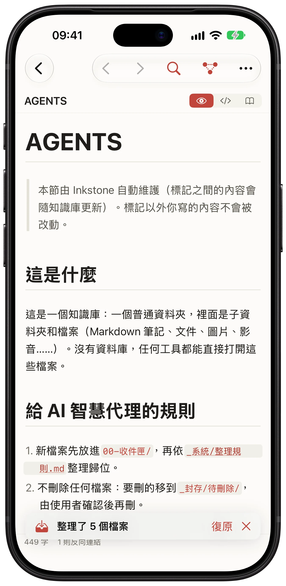

Inkstone › AI 上下文管理
AI 上下文管理，自動幫你更新
AI 助理好不好用，取決於你交給它哪些檔案、怎麼跟它說明這些檔案。Inkstone 把這些上下文寫進你的知識庫，資料夾每變一次就重寫一次。

什麼是 AI 上下文管理？
上下文就是 AI 模型回答之前看到的東西：檔案，以及關於這些檔案的說明。管理上下文，就是決定助理讀哪些檔案、告訴它資料夾怎麼組織、兩個檔案說法不一時以誰為準。
手寫的上下文，寫完一週就過時了。筆記挪了位置、資料夾改了名，助理就會理直氣壯地答錯。
三個入口檔案，由 Inkstone 來寫
AGENTS.md 是程式設計智慧代理和 AI 助理已經會在資料夾頂層去找的慣例。Inkstone 只重寫它自己標記之間的部分，你在旁邊加的內容原樣保留。
- AGENTS.md——這個知識庫是什麼，以及 AI 在這裡要守的規則：新檔案放哪、不刪除任何東西、私密資料夾不碰。
- README.md——資料夾地圖，人和機器都能讀。
- SOURCE_OF_TRUTH.md——什麼資訊以哪個檔案為準，智慧代理不用在兩個版本之間亂猜。
上下文跟著資料夾走
Inkstone 每整理一次，就把入口檔案更新成目前真實存在的資料夾。週一交給助理也好，三個月後交也好，地圖都是最新的。

預設就保護隱私
整理用的模型在你的裝置上執行。AGENTS.md 裡寫明私密資料夾不許碰；即使你開啟了雲端模型，看起來涉及隱私的檔案也絕不傳送。
常見問題
哪些 AI 工具會讀 AGENTS.md？
它就是資料夾頂層的一個普通 Markdown 檔案，拿到這個資料夾的助理或智慧代理都能讀；很多程式設計智慧代理會依名稱主動找它。
我能自己改 AGENTS.md 嗎？
能。Inkstone 只重寫它標記之間的那一段，你寫在上面或下面的說明都會保留。
不用 AI 整理也能用嗎？
能。建立知識庫時就會寫好入口檔案；不管檔案是依你的規則歸檔還是由模型歸檔，入口檔案都會保持最新。